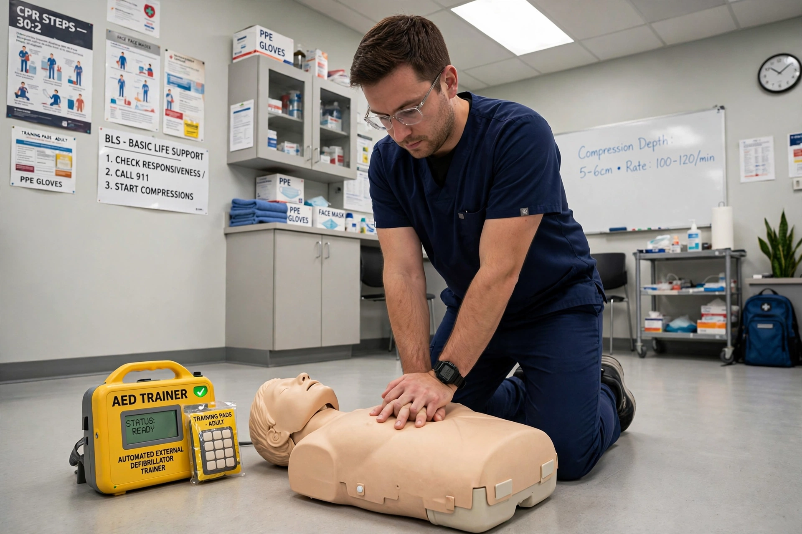

Cardiopulmonary resuscitation (CPR) is an emergency procedure consisting of chest compressions combined with artificial ventilation (mouth-to-mouth or by a device) in an effort to manually preserve brain function until further measures can restore spontaneous blood circulation and breathing in a person in cardiac arrest. It is recommended for unresponsive people with no breathing or abnormal breathing.

| Cardiopulmonary resuscitation | |
|---|---|
| Other names | CPR |
| ICD-9-CM | 99.60 |
| MeSH | D016887 |
CPR is indicated for cardiac arrest, when the heart stops beating effectively. The main purpose is to restore partial flow of oxygenated blood to the brain and heart, delaying tissue death and extending the window for successful resuscitation and defibrillation.
Current guidelines, such as those of the American Heart Association, emphasise high-quality chest compressions: push hard (about 5–6 cm deep in adults) and fast (100–120 per minute), allow full chest recoil, and minimise interruptions. For trained rescuers, compressions are combined with rescue breaths in a ratio of 30 compressions to 2 breaths for adults. Untrained bystanders are encouraged to perform compression-only CPR. An automated external defibrillator (AED) should be used as soon as available.
Methods of artificial ventilation were described in the 18th and 19th centuries. Modern CPR developed in the 1950s–1960s through the work of James Elam, Peter Safar, and William Kouwenhoven and colleagues at Johns Hopkins, who combined mouth-to-mouth ventilation with closed-chest compressions.
Survival varies widely by setting and rhythm; early CPR and defibrillation substantially improve chances of survival to hospital discharge, though many survivors have neurological injury.